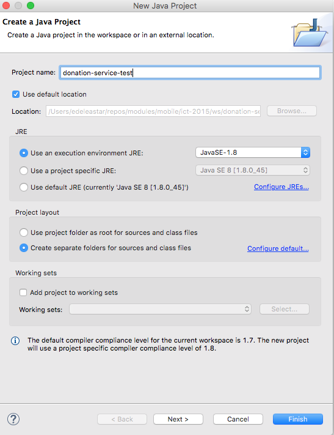
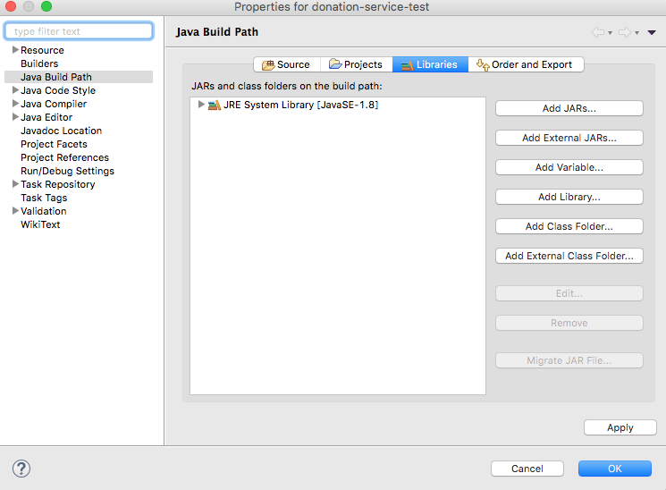
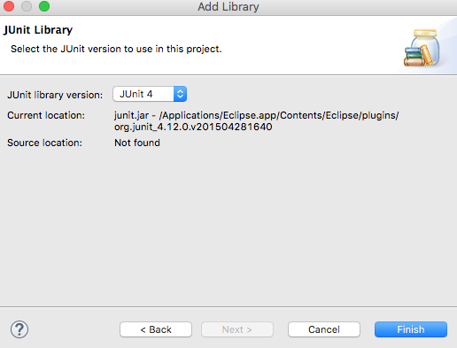
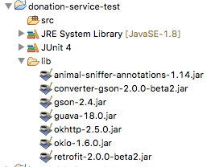
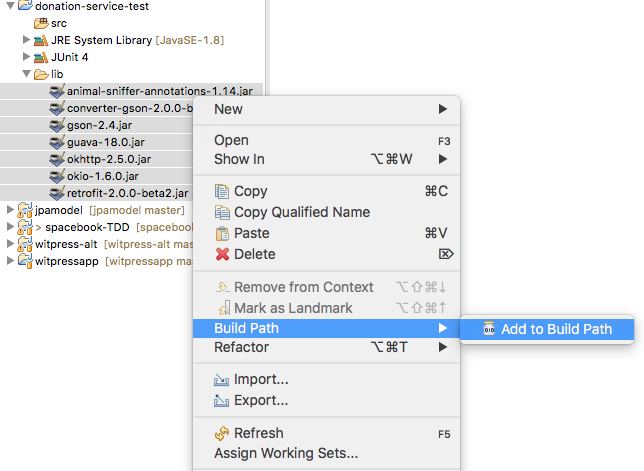
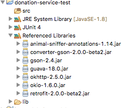
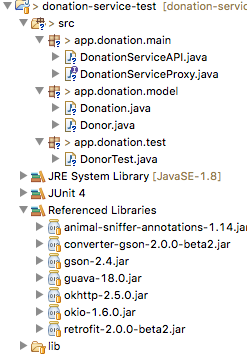
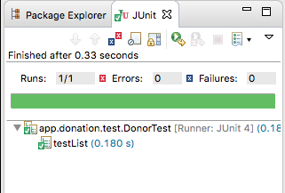
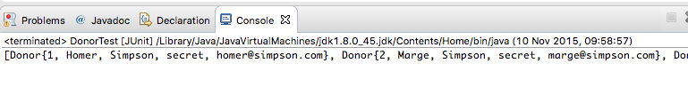

Create a new standard java project specifically to test the API we have developed in donation-service-play project.
Create a new Java Project in eclipse - this time neither a play nor an Android app, just a simple Java Application. Call the Project donation-service-play-test"

In the new project, select the project in Eclipse Package Explorer, right click, and select "Build Path->Configure Build Path"

Under libraries, select "Add Library" and in subsequent select JUnit 4:

This adds the JUnit library capability to our project.
Now download this archive here:
Expand the archive and drag/drop the folder into your project. It should now look like this:

Select all of the imported jar files, right-click, and select 'Build Path->Add to Build Path'

The project should now be configured thus:

In donation-service-test, create a new package called 'app.donation.model'. Incorporate the following two classes into this package:
package app.donation.model;
import com.google.common.base.Objects;
import static com.google.common.base.MoreObjects.toStringHelper;
public class Donor
{
public long id;
public String firstName;
public String lastName;
public String email;
public String password;
public Donor(String firstName, String lastName, String email, String password)
{
this.firstName = firstName;
this.lastName = lastName;
this.email = email;
this.password = password;
}
public String toString()
{
return toStringHelper(this).addValue(id)
.addValue(firstName)
.addValue(lastName)
.addValue(password)
.addValue(email)
.toString();
}
@Override
public boolean equals(final Object obj)
{
if (obj instanceof Donor)
{
final Donor other = (Donor) obj;
return Objects.equal(firstName, other.firstName)
&& Objects.equal(lastName, other.lastName)
&& Objects.equal(email, other.email)
&& Objects.equal(password, other.password);
}
else
{
return false;
}
}
}
package app.donation.model;
import static com.google.common.base.MoreObjects.toStringHelper;
import com.google.common.base.Objects;
public class Donation
{
public long id;
public int amount;
public String method;
public Donation (int amount, String method)
{
this.amount = amount;
this.method = method;
}
public String toString()
{
return toStringHelper(this).addValue(id)
.addValue(amount)
.addValue(method)
.toString();
}
@Override
public boolean equals(final Object obj)
{
if (obj instanceof Donation)
{
final Donation other = (Donation) obj;
return Objects.equal(amount , other.amount)
&& Objects.equal(method, other.method);
}
else
{
return false;
}
}
}
These are similar - but not identical to - the classes the play application we have just developed (compare them now)
In donation-service-test, create a new package called 'app.donation.main'. Incorporate the following two classes into this package:
package app.donation.main;
import java.util.List;
import app.donation.model.Donor;
import retrofit.Call;
import retrofit.http.Body;
import retrofit.http.DELETE;
import retrofit.http.GET;
import retrofit.http.POST;
import retrofit.http.Path;
public interface DonationServiceProxy
{
@GET("/api/donors")
Call<List<Donor>> getAllDonors();
@GET("/api/donors/{id}")
Call<Donor> getDonor(@Path("id") Long id);
@POST("/api/donors")
Call<Donor> createDonor(@Body Donor Donor);
@DELETE("/api/donors/{id}")
Call<Donor> deleteDonor(@Path("id") Long id);
@DELETE("/api/donors")
Call<String> deleteAllDonors();
}
package app.donation.main;
import java.util.List;
import com.google.gson.Gson;
import com.google.gson.GsonBuilder;
import app.donation.model.Donor;
import retrofit.Call;
import retrofit.GsonConverterFactory;
import retrofit.Response;
import retrofit.Retrofit;
public class DonationServiceAPI
{
private String service_url = "http://localhost:9000";
private DonationServiceProxy service;
public DonationServiceAPI()
{
Gson gson = new GsonBuilder().create();
Retrofit retrofit = new Retrofit.Builder()
.baseUrl(service_url)
.addConverterFactory(GsonConverterFactory.create(gson))
.build();
service = retrofit.create(DonationServiceProxy.class);
}
public List<Donor> getAllDonors() throws Exception
{
Call<List<Donor>> call = (Call<List<Donor>>) service.getAllDonors();
Response<List<Donor>> donors = call.execute();
return donors.body();
}
public Donor getDonor(Long id) throws Exception
{
Call<Donor> call = (Call<Donor>) service.getDonor(id);
Response<Donor> donors = call.execute();
return donors.body();
}
public int deleteDonor(Long id) throws Exception
{
Call<Donor> call = service.deleteDonor(id);
Response<Donor> val = call.execute();
return val.code();
}
public int deleteAllDonors() throws Exception
{
Call<String> call = service.deleteAllDonors();
Response<String> val = call.execute();
return val.code();
}
public Donor createDonor(Donor newDonor) throws Exception
{
Call<Donor> call = (Call<Donor>) service.createDonor(newDonor);
Response<Donor> returnedDonor = call.execute();
return returnedDonor.body();
}
}
Create another package called 'app.donation.test', and incorporate this class:
package app.donation.test;
import java.util.List;
import org.junit.Test;
import app.donation.main.DonationServiceAPI;
import app.donation.model.Donor;
public class DonorTest
{
private DonationServiceAPI donationServiceAPI = new DonationServiceAPI();
@Test
public void testList() throws Exception
{
List<Donor> list = donationServiceAPI.getAllDonors();
System.out.println(list);
}
}
Your project should now look like this:

The class we have just introduced is a simple unit test.
Make sure the donation-service app is running, and run the above test. To run the test, right click on the DonorTest class and select 'Run as->JUnit Test'
After perhaps a slight delay if this is the first time you have launched the app, you should see the test runner 'green bar':

And the console window might contain the users retrieved by the api call:

Think carefully about what we have just done.
We can compose some additional tests now in DonorTest
package app.donation.test;
import static org.junit.Assert.*;
import org.junit.Test;
import app.donation.main.DonationServiceAPI;
import app.donation.model.Donor;
public class DonorTest
{
private DonationServiceAPI donationServiceAPI = new DonationServiceAPI();
@Test
public void testCreate() throws Exception
{
Donor john = new Donor("john", "doe", "john@doe.com", "secret");
Donor donor = donationServiceAPI.createDonor(john);
assertEquals(john, donor);
}
@Test
public void testGet() throws Exception
{
Donor homer = new Donor("Homer", "Simpson", "homer@simpson.com", "secret");
Donor searchdonor = donationServiceAPI.getDonor(1l);
assertEquals(homer, searchdonor);
}
}
Run this test - we would expect it to pass. Explore the API directly (or via postman)
You should be able to see a new user created by the tests. You will also perhaps see duplicates if you run the test a few times.
In the play app, comment our or delete the Bootstrap task that loads the yml data. We would like the application to start with a blank database (otherwise the tests will be hard to manage)
In our UserTest class, put some fixtures in the class we will use to exercise the API:
public class DonorTest
{
static Donor donorArray [] =
{
new Donor ("homer", "simpson", "homer@simpson.com", "secret"),
new Donor ("lisa", "simpson", "lisa@simpson.com", "secret"),
new Donor ("maggie", "simpson", "maggie@simpson.com", "secret"),
new Donor ("bart", "simpson", "bart@simpson.com", "secret"),
new Donor ("marge", "simpson", "marge@simpson.com", "secret"),
};
List <Donor> donorList = new ArrayList<>();
The introduce setup/teardown methods which will populate/depopulate the service using the above fixture
@Before
public void setup() throws Exception
{
for (Donor donor : donorArray)
{
Donor returned = donationServiceAPI.createDonor(donor);
donorList.add(returned);
}
}
@After
public void teardown() throws Exception
{
donationServiceAPI.deleteAllDonors();
}
Finally, bring in these unit tests:
@Test
public void testCreate () throws Exception
{
assertEquals (donorArray.length, donorList.size());
for (int i=0; i<donorArray.length; i++)
{
assertEquals(donorList.get(i), donorArray[i]);
}
}
@Test
public void testList() throws Exception
{
List<Donor> list = donationServiceAPI.getAllDonors();
assertTrue (list.containsAll(donorList));
}
@Test
public void testDelete () throws Exception
{
List<Donor> list1 = donationServiceAPI.getAllDonors();
Donor testdonor = new Donor("mark", "simpson", "marge@simpson.com", "secret");
Donor returnedDonor = donationServiceAPI.createDonor(testdonor);
List<Donor> list2 = donationServiceAPI.getAllDonors();
assertEquals (list1.size()+1, list2.size());
int code = donationServiceAPI.deleteDonor(returnedDonor.id);
assertEquals (200, code);
List<Donor> list3 = donationServiceAPI.getAllDonors();
assertEquals (list1.size(), list3.size());
}
Theses tests should all pass.
Examine closely the last test.
Archive of the two project so far:
Consider writing some more User tests. Look back at last weeks lab for inspiration of one or two more useful tests you might compose.
Look carefully at the UserTest and also the methods in DonationServiceAPI.
Now consider how you might extent the DonationServiceAPI class to allow access to donations as well as users. The code changes are entirely restricted to the DonationServiceAPI class, there will be no need to change the play project.
Now, build a new test class - DonationTest - to exercises the api. Use UserTest as a role model for writing these tests.